2.1 Instrumentos para o registro da consulta de puericultura
A consulta de puericultura deve ser registrada de forma integrada no Prontuário Eletrônico e na Caderneta da Criança.
Neste guia, você encontrará orientações sobre onde registrar, consultar e acompanhar as principais informações da criança em cada instrumento.
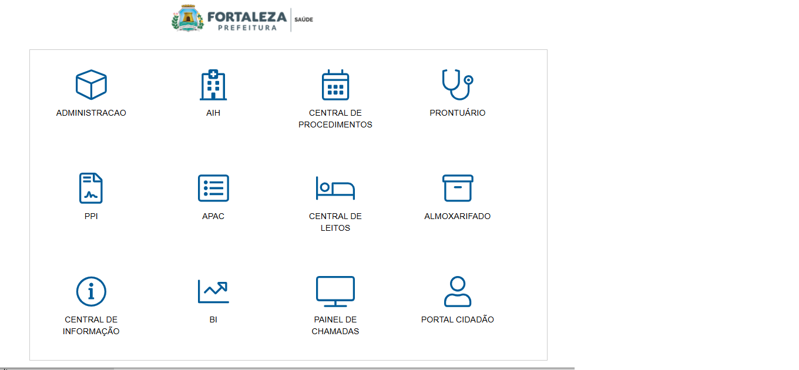
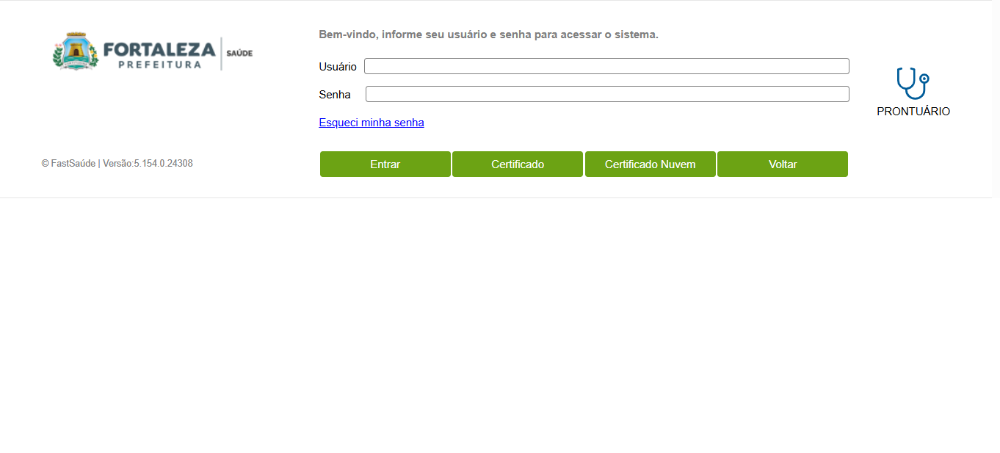

Entre no módulo prontuário utilizando seu usuário e senha.
2.2 Como Iniciar o Registro da Consulta
Antes de começar o preenchimento do SOAP, é importante realizar os primeiros passos no sistema.
Acessar o atendimento da criança no prontuário
Localize a criança no sistema e abra o atendimento correspondente.
Conferir os dados do paciente
Verifique nome, data de nascimento e outros dados para garantir que o registro será feito no paciente correto.
Iniciar o registro na aba de atendimento (SOAP)
Após selecionar a criança, o prontuário direciona automaticamente para a tela de registro, iniciando pela aba Subjetivo.
Esse momento inicial garante que o registro será feito no paciente correto e dentro do atendimento adequado.
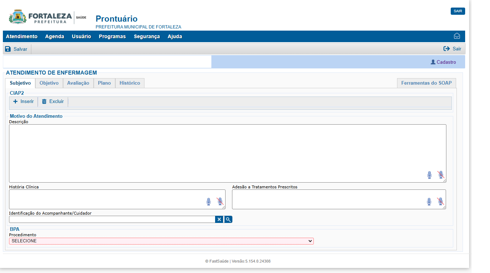
2.3 Subjetivo e BPA
O Subjetivo refere-se às informações relatadas pelo responsável pela criança.
Escrever no campo motivo do atendimento
Descreva conforme as informações relatadas pelo responsável pela criança.
Selecionar o BPA
Selecione o Boletim de Produção Ambulatorial correspondente ao profissional.
Clicar em Salvar
Após informar o procedimento, clique em Salvar para registrar.
📋 Seleção do BPA
Selecione o procedimento correspondente ao profissional:
🩺 Médico / Pediatra
Consulta de puericultura de médico na Atenção Primária
👩⚕️ Enfermeiro e demais profissionais de nível superior
Consulta de puericultura de profissionais de nível superior na Atenção Primária (exceto médico)
- Produção da unidade
- Monitoramento dos atendimentos
- Impacta diretamente nos indicadores
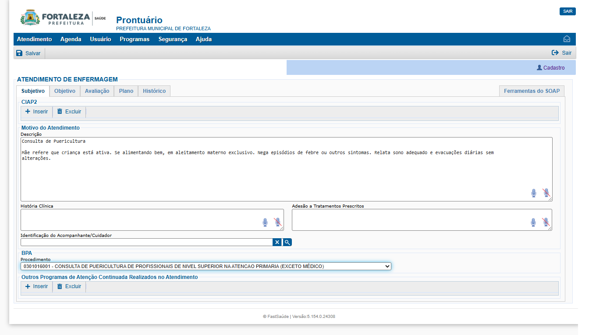
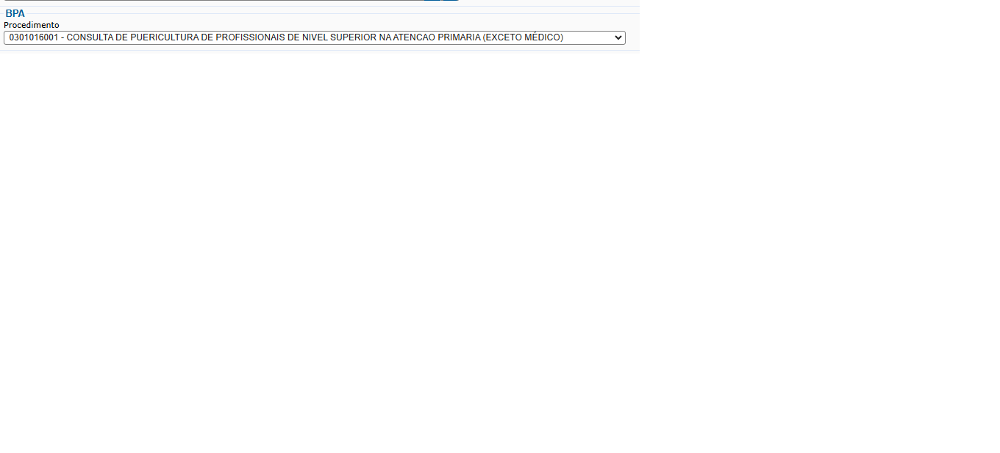
2.4 Objetivo
Compreende os dados obtidos por meio da observação direta, exame físico e avaliação realizadas pelo profissional de saúde. É nesse momento que o profissional registra dados mensuráveis e achados clínicos, complementando as informações do Subjetivo.
Acessar a aba Objetivo
Clique na aba Objetivo no prontuário eletrônico.
Inserir dados antropométricos
Conforme a faixa etária: peso, altura, perímetro cefálico. O sistema calcula automaticamente o IMC.
Registrar temperatura e demais dados
Registrar temperatura e demais dados quando pertinentes ao atendimento.
Descrever o exame físico
No campo Objetivo — avaliação do profissional da saúde, descreva o exame físico realizado.
Salvar
Após o preenchimento completo, clique em Salvar.
- Avaliação do crescimento infantil
- Plotagem adequada nas curvas de crescimento
- Monitoramento dos indicadores
- Qualificação do cuidado
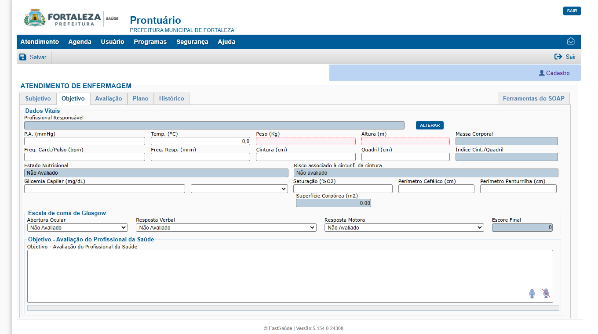
Após o registro no prontuário eletrônico, as informações devem ser transcritas para a Caderneta da Criança, na Parte II – Registros do acompanhamento da criança, garantindo a continuidade do acompanhamento pela família e pelos demais profissionais de saúde, nos seguintes tópicos correspondentes:
Acompanhando o crescimento → registro de peso, comprimento/estatura, perímetro cefálico e IMC, conforme a idade da criança, com a devida plotagem dos gráficos de crescimento;
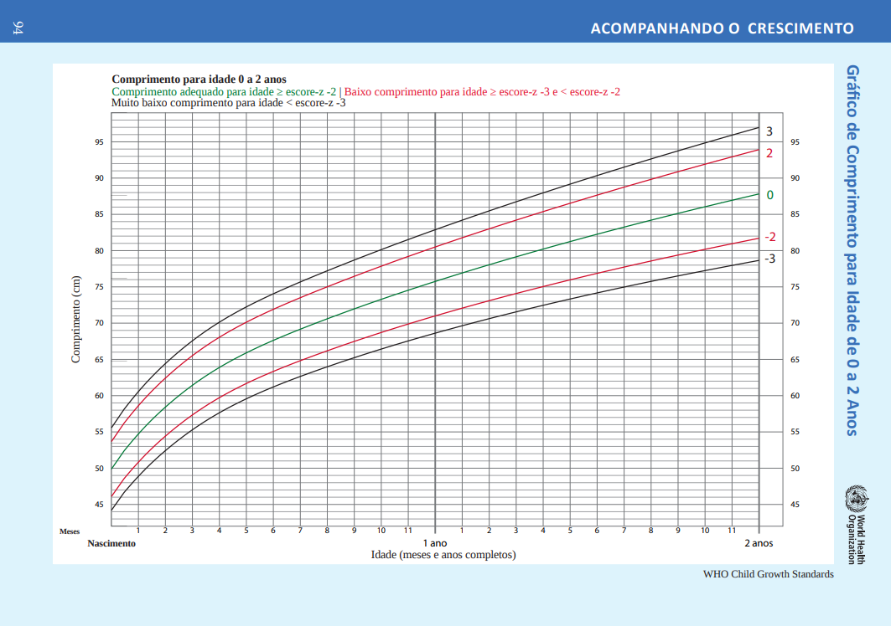
2.5 Avaliação
A aba Avaliação corresponde ao momento em que o profissional registra sua interpretação clínica com base nas informações coletadas na consulta de Puericultura.
Clique na aba Avaliação
Acesse a aba Avaliação no prontuário.
Registrar o código (CIAP2 ou CID)
Conforme o profissional, selecione CIAP2 (enfermagem/APS) ou CID (medicina).
Descrever a avaliação clínica
No campo Descrição, escreva a avaliação clínica de forma resumida e objetiva.
Preencha, se necessário:
Diagnóstico oncológico (quando aplicável) e datas e classificações relacionadas.
Revise as informações
Verifique se todos os campos foram preenchidos corretamente.
Salvar
Clique em Salvar para finalizar o registro.
🔵 Enfermagem — CIAP2
Para o registro da consulta de enfermagem, deve-se acessar o campo CIAP 2 e utilizar a opção modos de pesquisa, que permite localizar o código tanto pelo número quanto pela descrição:
O profissional pode digitar o código 46 ou realizar a busca pelo termo "consulta", selecionando a opção correspondente.
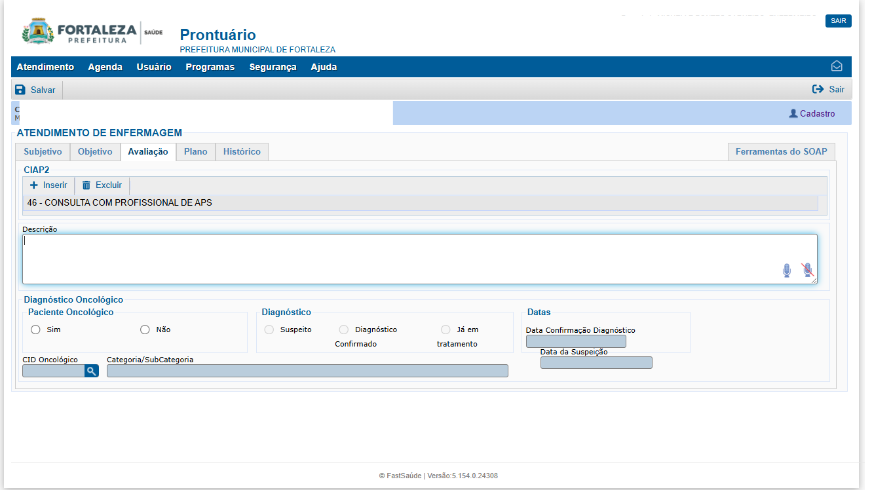
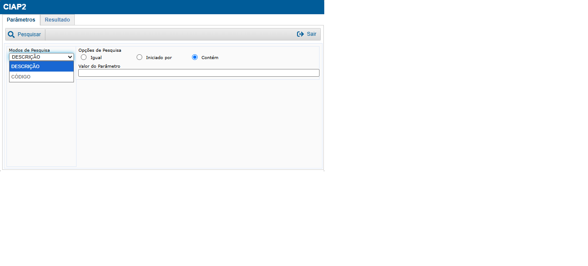
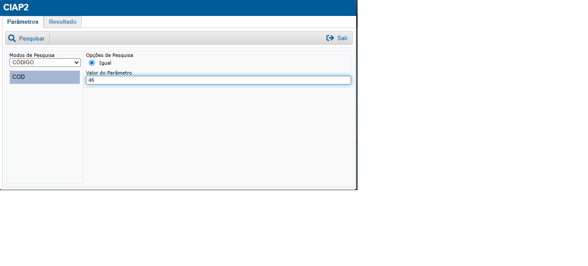
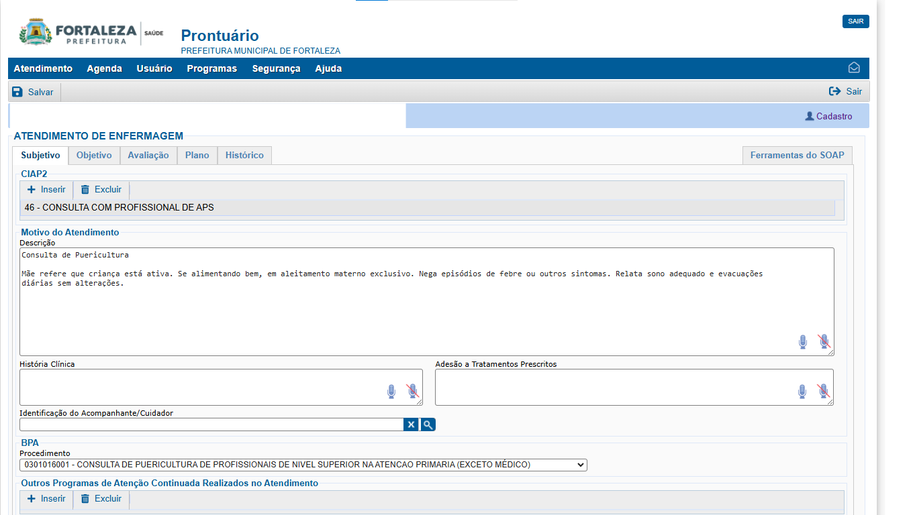
🔴 Medicina — CID
Para a medicina, clicar no CID e realizar a pesquisa: Z00.1 — Exame de rotina de saúde da criança.
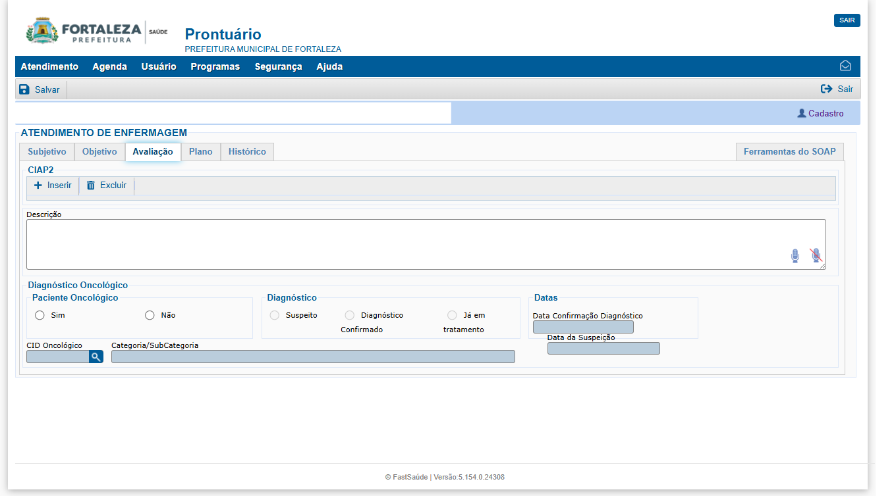
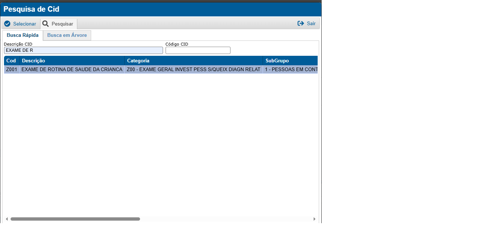
2.6 Plano
Esta seção é o momento de registrar, após a avaliação do profissional, todas as condutas realizadas, orientações de saúde dadas à família e ações e seguimentos.
Clique na aba Plano
Acesse a aba Plano no prontuário.
Preencher o campo
Registre: Objetivo Terapêutico / Intervenção / Procedimentos.
Clique em Salvar
Salve as informações registradas.
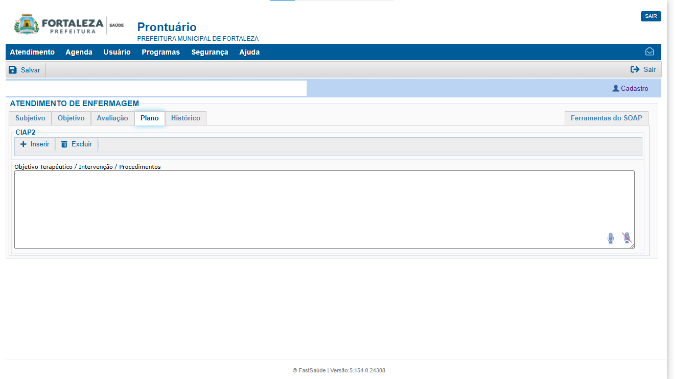
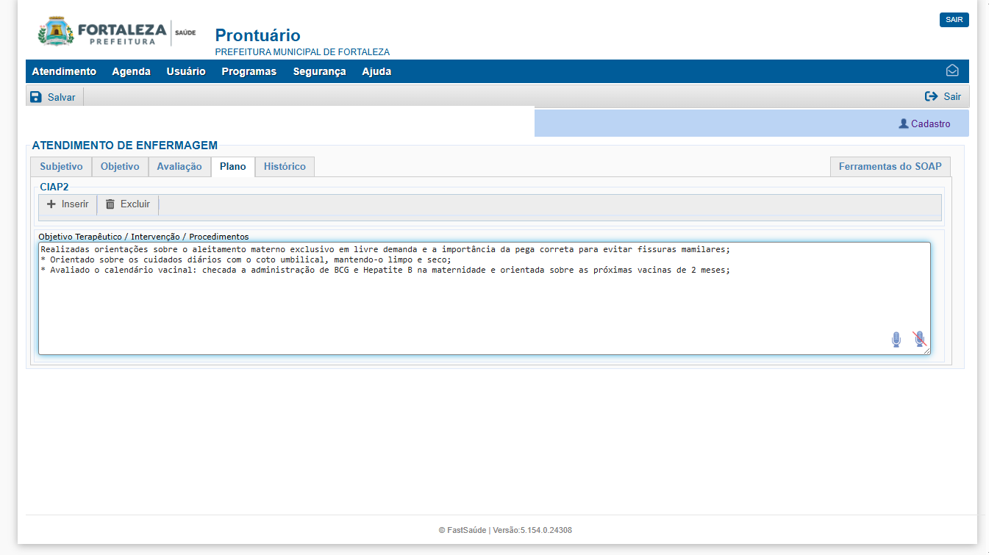
2.7 Ferramentas do SOAP — Criança/Adolescente
Após realizar o atendimento no SOAP, o sistema libera a aba Ferramentas do SOAP, direcionando para o Programa: Criança/Adolescente. Aqui você complementa a consulta de puericultura com registros específicos.
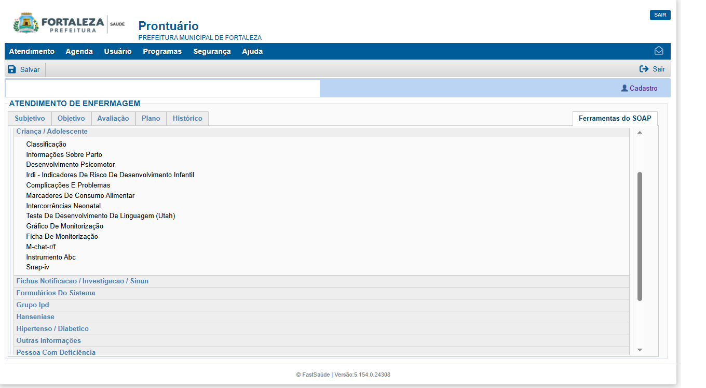
2.7.1 Classificação
Define o perfil da criança no atendimento conforme a classificação de risco.
A estratificação de risco da criança constitui etapa fundamental no acompanhamento em puericultura, pois orienta a organização do cuidado, a periodicidade das consultas e a necessidade de acompanhamento compartilhado com outros pontos da rede de atenção, contribuindo para a integralidade e a coordenação do cuidado na Atenção Primária à Saúde.
Deve ser realizada na primeira consulta, atualizada nas consultas subsequentes e sempre que houver identificação de novos fatores de risco ou mudanças nas condições de saúde da criança, considerando a dinâmica do desenvolvimento infantil (Brasil, 2025; Fortaleza, 2016).
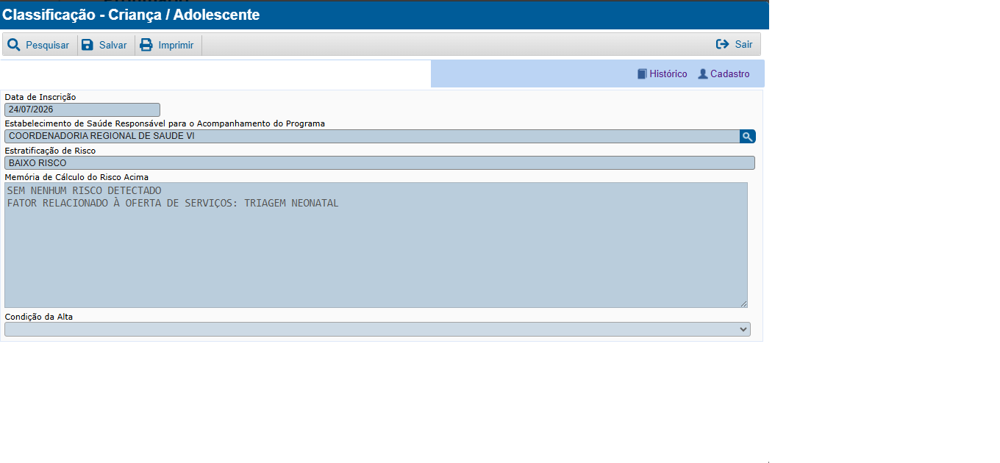
2.7.2 Informações sobre o Parto
Compreende os dados relacionados às condições de nascimento da criança. Inclui informações como: tipo de parto, idade gestacional, intercorrências, condições ao nascer e triagem neonatal.
Realizar o preenchimento das informações
Preencha os campos de informações sobre parto, nascimento e internação neonatal.
Registrar informações sobre a alta
Registre no campo Informações sobre a alta os dados relevantes do nascimento e condições de saída.
Salvar
Clique em Salvar para finalizar o registro.
As informações podem ser transcritas do prontuário eletrônico para a Caderneta da Criança ou verificadas diretamente na caderneta, quando já estiverem previamente registradas.
Essas informações localizam-se na Parte II – Registros do acompanhamento da criança, no tópico: Acompanhamento da criança e consultas recomendadas, contemplando:
- Pré natal, Parto, Nascimento, Internação Neonatal e Alta → Dados do nascimento (registro de peso, comprimento, perímetro cefálico, idade gestacional e índice de Apgar) e Condições ao nascer (tipo de parto, local do parto e intercorrências)
- Triagens neonatais → registro dos testes realizados (pezinho, orelhinha, olhinho e coraçãozinho) e seus respectivos resultados;
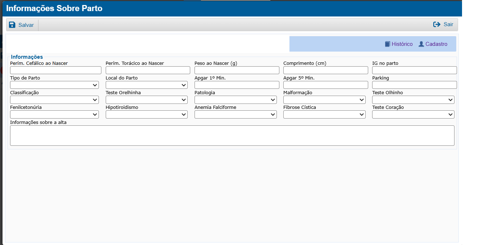
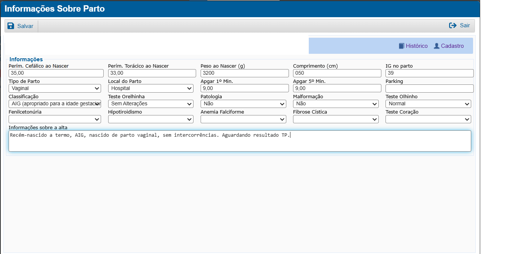
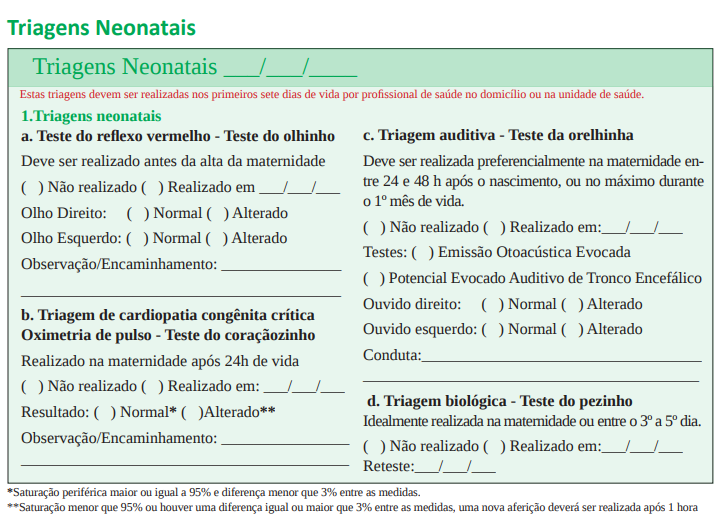
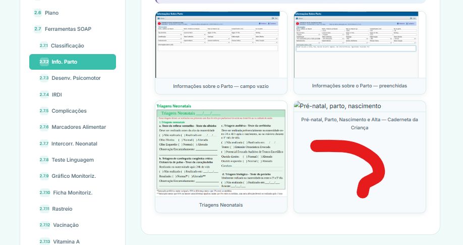
2.7.3 Desenvolvimento Psicomotor
Compreende a avaliação do desenvolvimento neuropsicomotor da criança, considerando os marcos esperados para a idade, permitindo identificar precocemente atrasos ou alterações no desenvolvimento.
Selecionar a faixa etária
Selecione a faixa etária correspondente à criança.
Avaliar os marcos do desenvolvimento
Avalie os marcos apresentados na tabela conforme a faixa etária.
Marcar os itens observados
Marque os itens conforme observado durante o atendimento.
Registrar observações
Registre observações, se necessário.
Salvar
Salve as informações.
Após o preenchimento, o sistema apresenta a avaliação do desenvolvimento da criança, indicando se o resultado está adequado, se há provável atraso ou alerta no desenvolvimento.
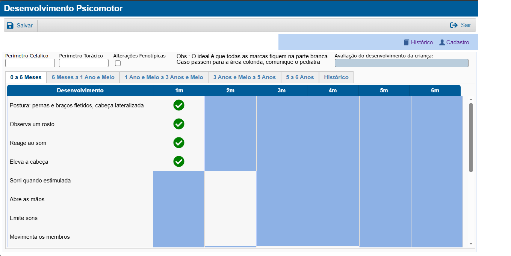
As informações podem ser transcritas ou verificadas do Prontuário eletrônico para a caderneta da criança na Parte II – Registros do acompanhamento da criança, no tópico: Acompanhando o desenvolvimento → acompanhamento dos marcos do desenvolvimento conforme a idade;
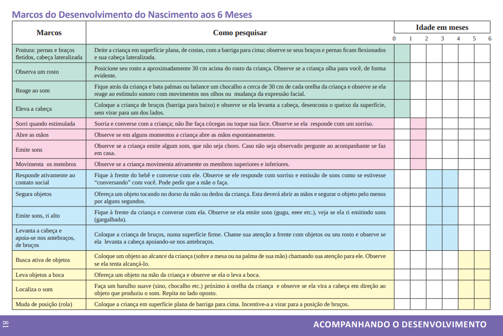
Além disso, a caderneta contempla o M-CHAT, utilizado em crianças de 16 a 30 meses como instrumento de rastreio de sinais de risco para o Transtorno do Espectro Autista, reforçando a importância da vigilância do desenvolvimento infantil.
2.7.4 IRDI — Indicadores de Risco de Desenvolvimento Infantil
Os IRDI consistem em um instrumento de observação clínica utilizado para identificar precocemente sinais de risco no desenvolvimento psíquico e na constituição subjetiva da criança, especialmente na relação com o cuidador.
Preencher os itens conforme a faixa etária
Avalie e preencha os itens correspondentes à faixa etária da criança.
Avaliar a presença ou ausência dos indicadores
Marque a presença ou ausência de cada indicador.
Registrar o resultado
Registre o resultado conforme análise do instrumento.
Salvar
Salve as informações.
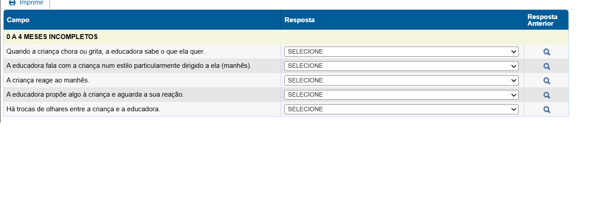
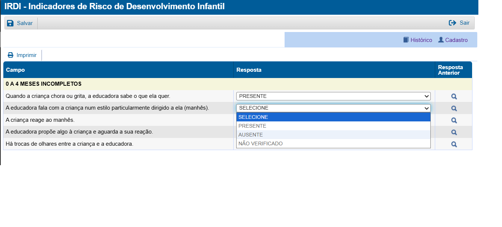
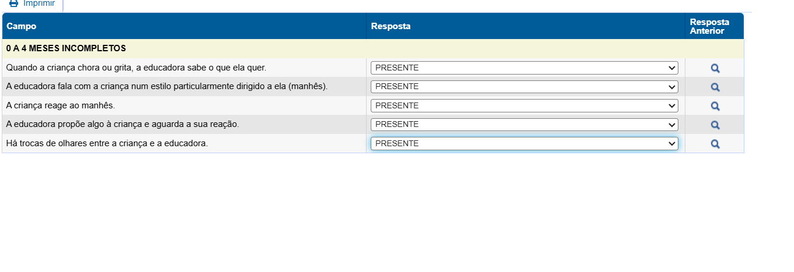
2.7.5 Complicações e Problemas
Registro de fatores e condições que podem impactar a saúde da criança. Inclui aspectos biológicos, condições de vida, estilo de vida e fatores socioeconômicos.
Avaliar cada item apresentado
Avalie cada item apresentado na tela.
Responder Sim ou Não
Para cada pergunta, conforme a presença de fatores relevantes (biológicos, hábitos de vida e contexto social).
Salvar
Salve as informações.
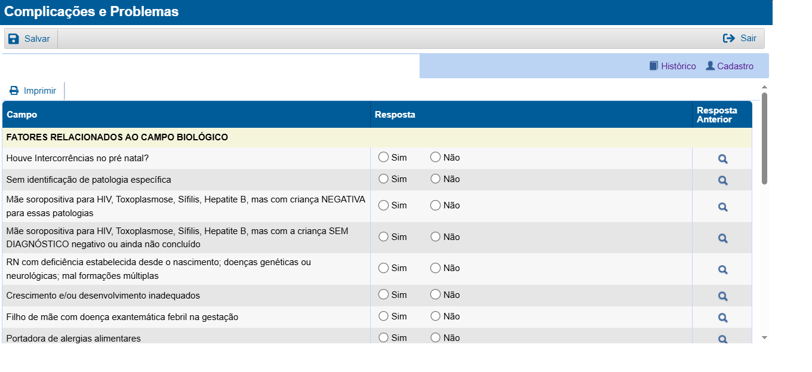
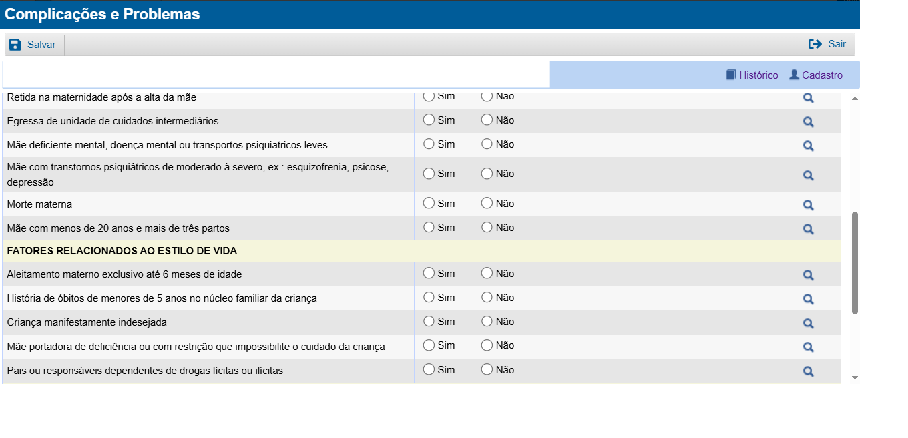
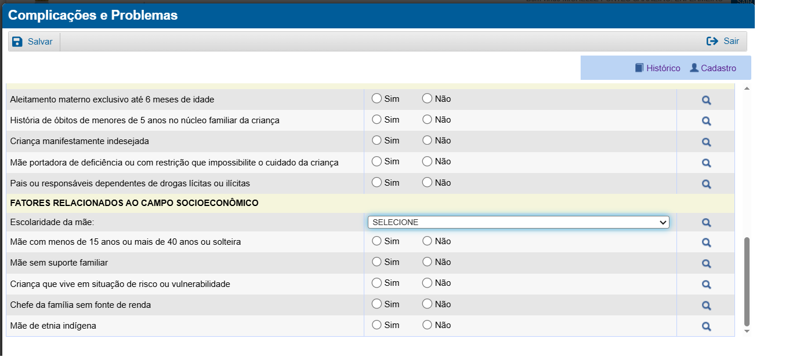
2.7.6 Marcadores de Consumo Alimentar
Instrumento de avaliação dos hábitos alimentares da criança. Permite identificar padrões alimentares e possíveis riscos nutricionais.
Avaliar cada item
Avalie cada item apresentado na tela.
Responder Sim, Não ou Não sabe
Para cada marcador, conforme relato do responsável.
Considerar frequência e qualidade
Considere a frequência e qualidade da alimentação relatada.
Salvar
Salve as informações.
O correto preenchimento dos marcadores de consumo alimentar impacta diretamente nos indicadores de saúde, sendo essencial para o monitoramento do aleitamento materno exclusivo.
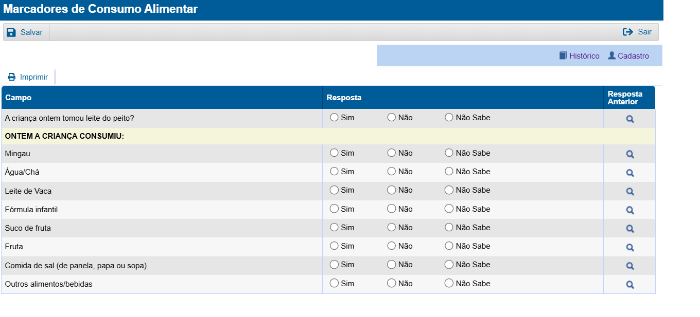
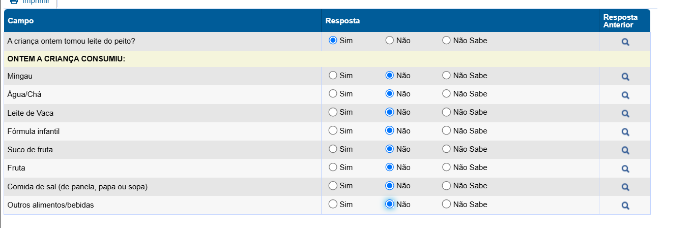
As informações podem ser registradas ou verificadas na Caderneta da Criança, na Parte II – Registros do acompanhamento da criança, no tópico: Acompanhamento da criança e consultas recomendadas, contemplando o registro das consultas de puericultura conforme a faixa etária;
Nesse espaço, deve ser realizado o registro do tipo de Aleitamento/alimentação da criança em cada consulta de Puericultura.
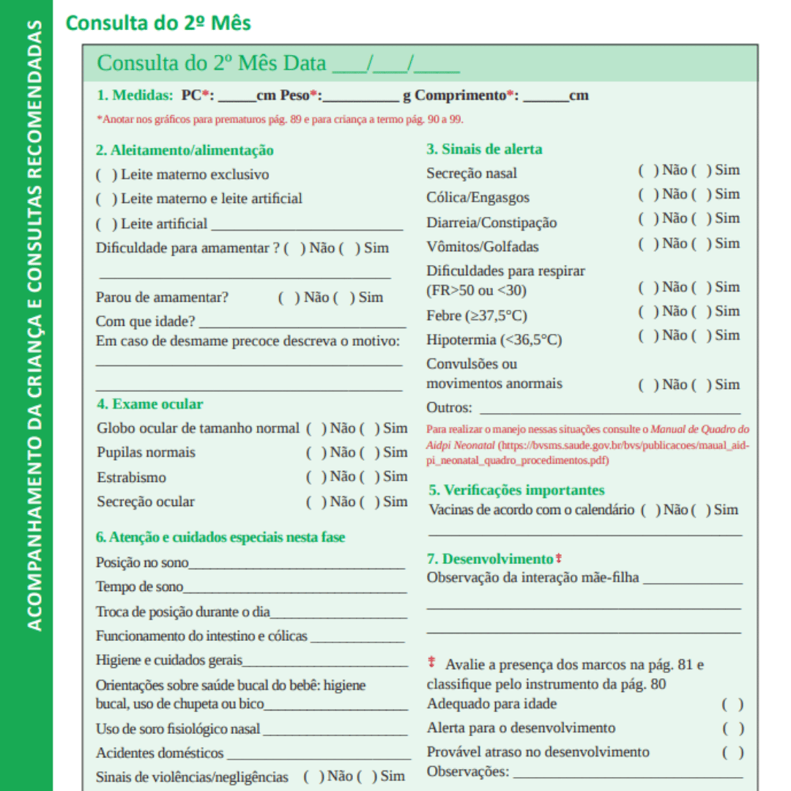
2.7.7 Intercorrências Neonatal
Registro de intercorrências ocorridas no período neonatal. Permite identificar condições e eventos que podem impactar o desenvolvimento e a saúde da criança.
Avaliar cada item
Avalie cada item apresentado na tela.
Responder Sim ou Não
Para cada intercorrência, conforme relato do responsável e/ou registros disponíveis.
Registrar outras intercorrências
Se necessário, registre outras intercorrências relevantes.
Salvar
Salve as informações.
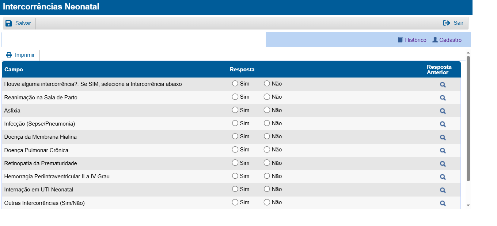
As informações sobre intercorrências neonatais podem ser consultadas na Caderneta da Criança, na seção Pré-Natal, Parto, Nascimento, Internação Neonatal e Alta, especialmente nos campos referentes à reanimação neonatal, internação neonatal, motivo da internação, problemas apresentados, diagnósticos, tratamentos realizados e recomendações após a alta.
Quando necessário, utilize também o relatório de alta neonatal e o relato do responsável para complementar as informações registradas no prontuário.
2.7.8 Teste de Desenvolvimento da Linguagem (UTAH)
Triagem do desenvolvimento da linguagem. Avalia possíveis atrasos ou alterações na comunicação da criança.
Avaliar cada item
Avalie cada item apresentado na tela.
Responder Sim ou Não
Para cada pergunta, conforme observação e/ou relato do responsável.
Considerar aspectos da comunicação
Considere aspectos da comunicação verbal e não verbal da criança.
Salvar
Salve as informações.
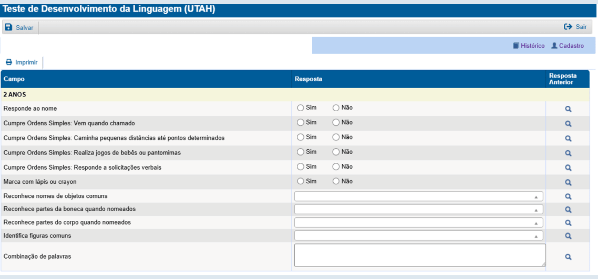
2.7.9 Gráfico de Monitorização
Representação gráfica das medidas antropométricas da criança. Permite acompanhar o crescimento e identificar possíveis alterações.
Selecionar o gráfico
Selecione o gráfico de monitorização desejado. O sistema realiza automaticamente a plotagem dos dados nas curvas de crescimento conforme idade e sexo.
Clicar em Imprimir
Imprima o gráfico para entregar à família.
Avaliar as informações
Avalie as informações conforme plotagem e identifique possíveis desvios (baixo peso, sobrepeso, atraso de crescimento).
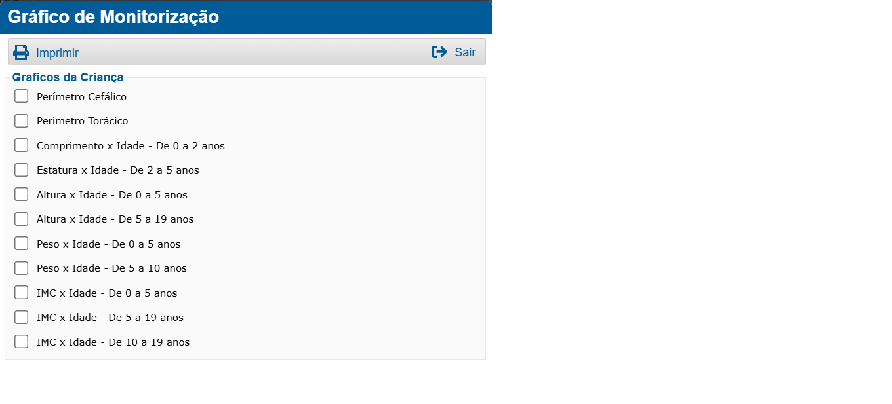
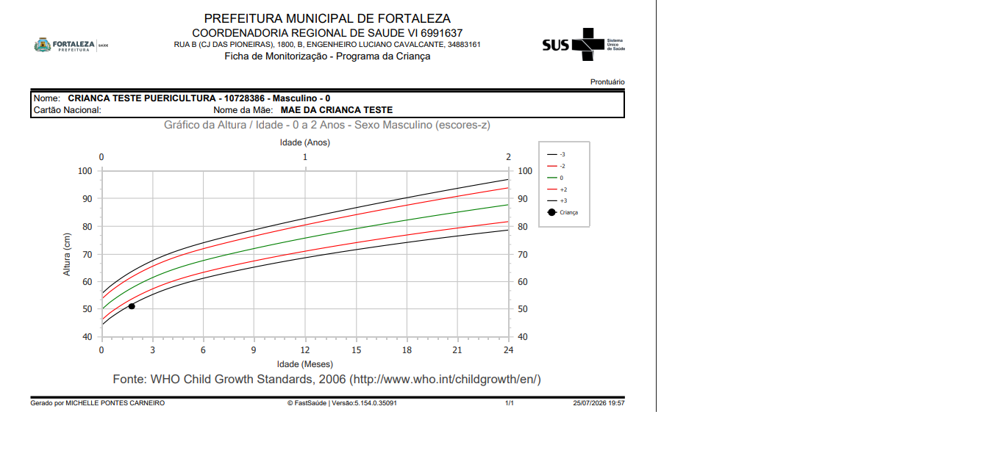
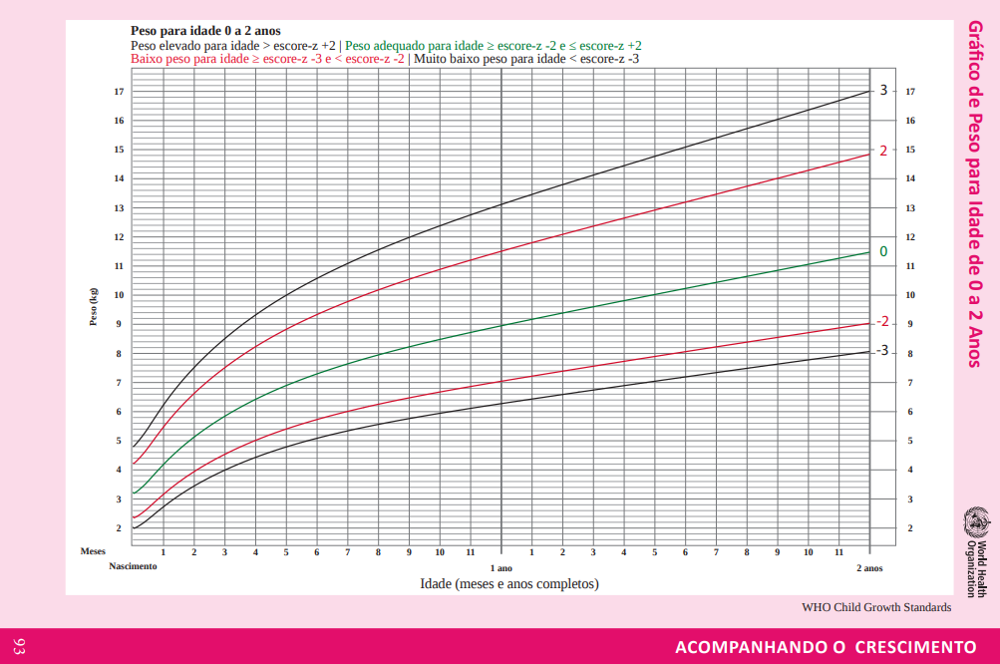
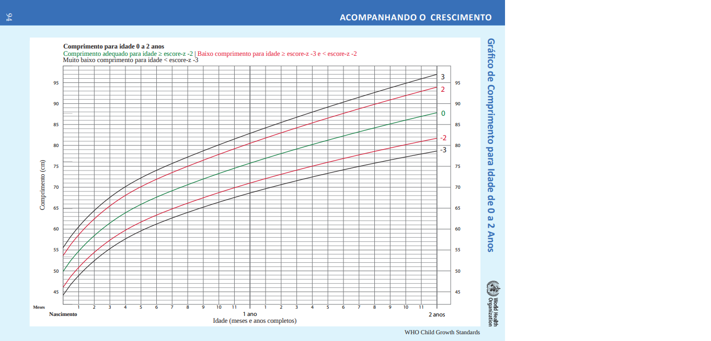
As informações podem ser registradas ou conferidas na Caderneta da Criança, na Parte II – Registros do acompanhamento da criança, no tópico: Acompanhamento do crescimento.
Gráficos de:
- Peso por idade
- Estatura/comprimento por idade
- IMC por idade
- Perímetro cefálico por idade
Orientações para o preenchimento:
- Registrar os dados antropométricos a cada consulta de puericultura;
- Plotar corretamente os pontos nos gráficos conforme sexo e idade da criança;
- Garantir que os valores registrados na caderneta sejam os mesmos inseridos no prontuário eletrônico;
- Utilizar os gráficos como ferramenta de comunicação com a família sobre o crescimento da criança.
2.7.10 Ficha de Monitorização
Resumo evolutivo da criança ao longo do acompanhamento.
Acessar a ficha
Acesse a ficha de monitorização no sistema.
Clicar para imprimir
Imprima a ficha para acompanhamento.
Visualizar o resumo
Visualize o resumo dos registros já realizados ao longo do tempo.
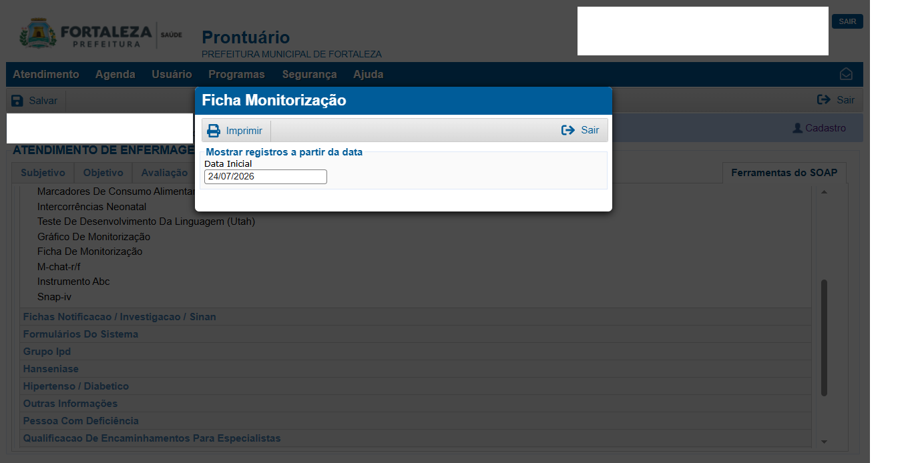
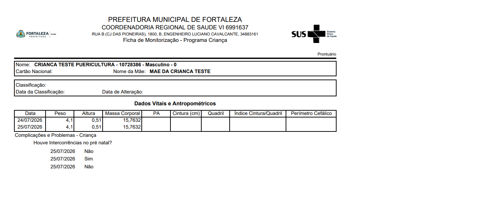
2.7.11 Instrumentos de Rastreio
Refere-se à aplicação de instrumentos padronizados utilizados para identificação precoce de possíveis alterações no desenvolvimento infantil, comportamento e saúde mental, subsidiando a tomada de decisão clínica e o encaminhamento oportuno.
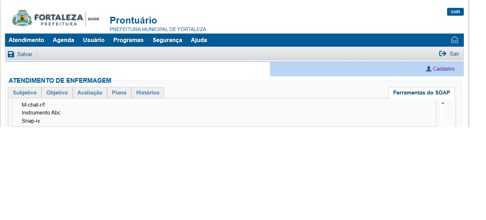
Acessar o instrumento adequado
Acesse o instrumento de rastreio conforme a faixa etária e indicação clínica.
Registrar as respostas
Registre as respostas conforme relato do responsável e/ou observação do profissional.
Verificar escores
O prontuário poderá gerar escores ou classificações automáticas conforme o instrumento utilizado.
Descrever condutas
Descreva as condutas adotadas diante de resultados sugestivos de risco.
Salvar
Salve as informações após o preenchimento completo.
🟡 M-CHAT (r/f) — Rastreio para TEA
Aplicado conforme faixa etária indicada: 16 a 30 meses. Este instrumento está presente na Caderneta da Criança, reforçando sua utilização na Atenção Primária.
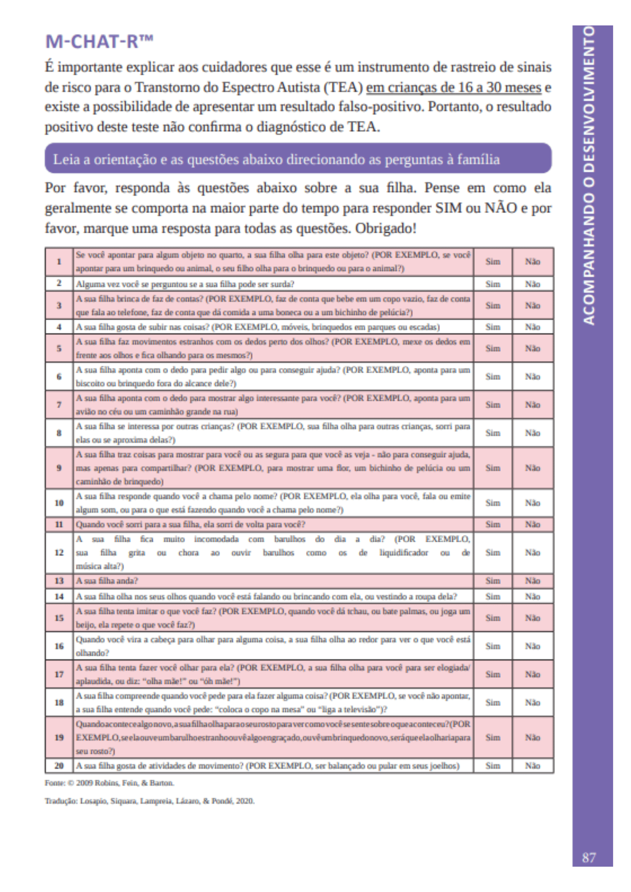
🟠 Instrumento ABC
Utilizado para avaliação de crianças de 31 meses a 6 anos.
🔵 SNAP-IV
Avalia atenção, hiperatividade e impulsividade. Indicado para crianças e adolescentes de 7 a 17 anos, geralmente associado ao contexto escolar.
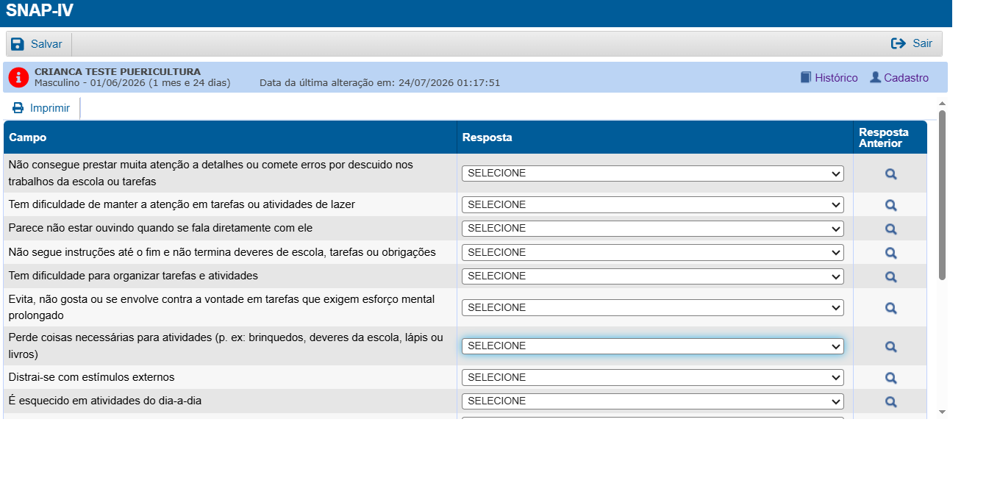
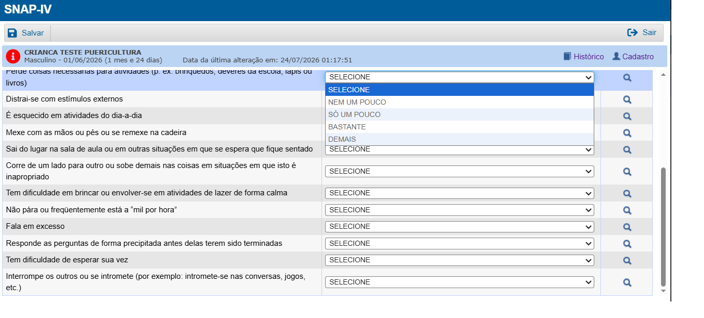
2.7.12 Vacinação
A vacinação é um dos principais componentes da puericultura, devendo ser avaliada em todas as consultas.
Em todas as consultas de puericultura, o profissional deve avaliar a situação vacinal da criança, verificando o esquema vacinal no prontuário eletrônico e na Caderneta da Criança, identificando atrasos ou esquemas incompletos e orientando a atualização conforme o calendário vacinal vigente.
- No cabeçalho da criança.
- No item das Ferramentas do SOAP: Indicação de Vacinas
(o registro é frequentemente alimentado pela equipe de técnicos de enfermagem)
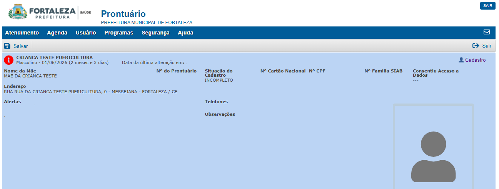
As informações podem ser conferidas na Caderneta da Criança, na Parte II – Registros do acompanhamento da criança, no tópico: Vacinação.
Consultar Registro de Aplicação das Vacinas do Calendário Nacional e Registros de Outras Vacinas e Campanhas.
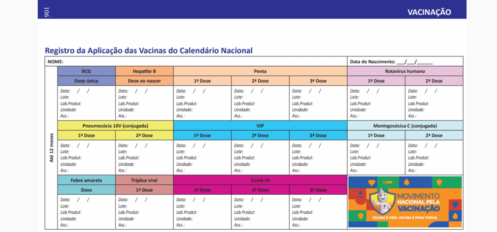
Em todas as consultas de puericultura, o profissional deve avaliar a situação vacinal da criança, por meio da verificação do esquema vacinal no prontuário eletrônico e na Caderneta da Criança, identificando atrasos ou esquemas incompletos e orientando a atualização conforme o calendário vacinal vigente.
2.7.13 Suplementação de Vitamina A
A suplementação de vitamina A é uma estratégia importante na prevenção de deficiência nutricional.
- Pode ser consultado no cabeçalho da criança.
- E no item das Ferramentas do SOAP: Indicação de Vacinas, sendo o registro frequentemente alimentado pela equipe de técnicos de enfermagem.
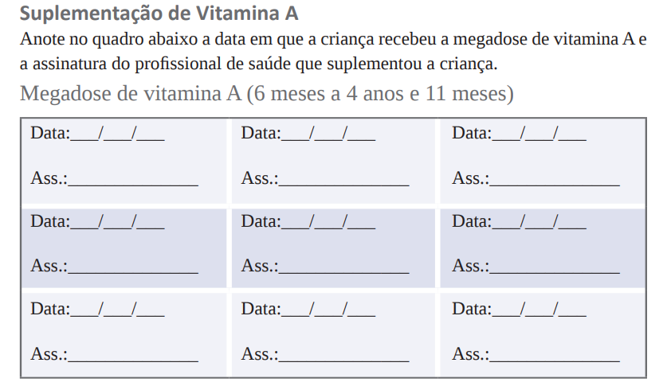
As informações podem ser consultadas ou registradas na Caderneta da Criança, na Parte II – Registros do acompanhamento da criança, no tópico: Registros da Suplementação de Vitamina A, Ferro ou Outros Micronutrientes.
Especificamente em Suplementação de Vitamina A, onde devem ser anotadas as doses administradas de vitamina A e o acompanhamento da suplementação ao longo das consultas.
2.7.14 Suplementação de Ferro
A suplementação de ferro é essencial para prevenção da anemia ferropriva.
Consultar registros de prescrição e dispensação.
O profissional pode registrar no campo Subjetivo orientações sobre uso, adesão e prescrição.
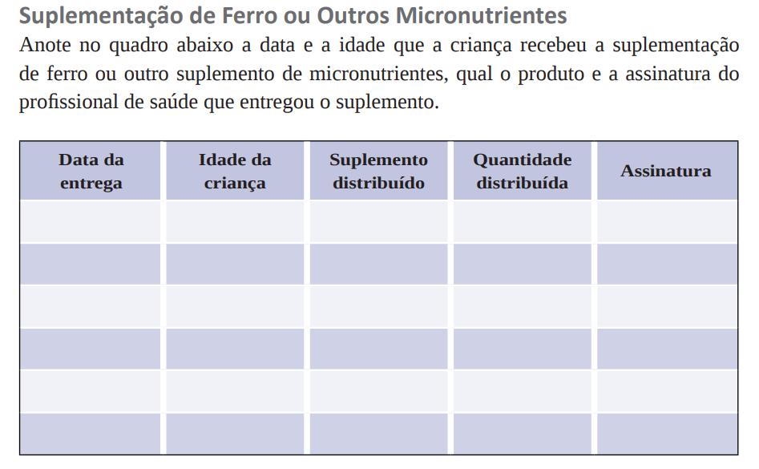
As informações podem ser consultadas ou registradas na Caderneta da Criança, na Parte II – Registros do acompanhamento da criança, no tópico: Registros da Suplementação de Vitamina A, Ferro ou Outros Micronutrientes.
Especificamente em Suplementação de Ferro e Outros Micronutrientes, onde devem ser anotadas as doses administradas e o acompanhamento da suplementação ao longo das consultas.
2.7.15 Puericultura Odontológica
A saúde bucal deve ser integrada ao acompanhamento da criança desde os primeiros meses de vida.
Consultar registros de atendimentos odontológicos realizados. O profissional deve reforçar orientações sobre higiene oral, aleitamento e encaminhamento para avaliação odontológica quando necessário.
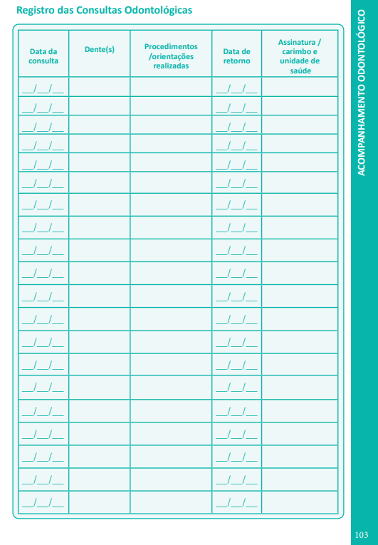
As informações podem ser consultadas ou registradas na Caderneta da Criança, na Parte II – Registros do acompanhamento da criança, no tópico: Acompanhamento Odontológico.
Registros das Consultas Odontológicas: verificar orientações e registros relacionados à saúde bucal.
2.8 Finalizar Consulta de Puericultura
Após o preenchimento de todos os itens da Ferramenta do SOAP — Programa Criança/Adolescente, concluir o atendimento de Puericultura clicando em Salvar.
- ✅ Subjetivo preenchido com motivo do atendimento
- ✅ BPA selecionado e salvo
- ✅ Dados antropométricos inseridos (peso, altura, PC)
- ✅ Avaliação com CIAP2 ou CID registrada
- ✅ Plano com condutas e orientações
- ✅ Ferramentas do SOAP preenchidas (conforme indicação)
- ✅ Caderneta da Criança atualizada
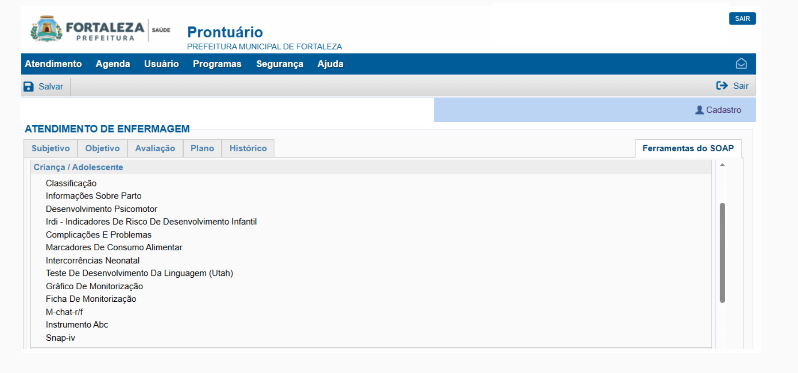